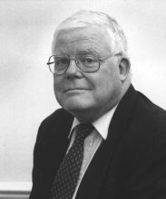

Please note: the AAS Obituaries are temporarily being hosted on this website while their full content is being ingested into the PubPub publishing platform newly adopted by the Bulletin of the American Astronomical Society. When the migration is complete, your existing links will take you to the final, migrated content. Contact peter.williams@aas.org with any questions.
Gordon James Fraser MacDonald (1929-2002)
Gordon J. F. MacDonald was born in Mexico in 1929, the son of a Scottish accountant. He never revealed to me how he managed to make the transition from schooling in Mexico to a highly successful student career at Harvard, ending with a PhD in 1954. I met Gordon first in 1959, in the home of Walter Munk, having been invited there specifically to meet this outstanding post doc, who had written a book together with Walter, The Rotation of the Earth. This is not a trivial subject, as I knew, having worked in this field before. I was delighted with the book (still considered the standard work in this field), and delighted that it received a prize for clarity of exposition. Already, at this first meeting with Gordon, I went away with the feeling that I had met a young man of outstanding intellectual abilities. His wide-ranging knowledge was most impressive, as was his rapid understanding of difficult topics in physics.
From this meeting on, Gordon and I remained in close contact. We discussed innumerable subjects over the years, we shared graduate students. He was the best person I knew with whom to discuss new ideas and many scientific topics of the day. He was always well informed, and always gave thoughtful replies.
After the creation of NASA in 1957 Gordon and I had many opportunities to meet and exchange viewpoints, having both been appointed by the White House and by NASA to various advisory committees about the space program. It was very interesting to observe on these committees, how often the same groupings of the members emerged, even on totally different topics. I cannot recall any case where Gordon and I were on different sides of any debate.
Gordon's career was as varied as any I have known. He made important advances in the understanding of the Earth, both its interior and its atmosphere. He was elected at an early age to the various scientific academies and societies. He held appointments in high positions at universities as well as in defense related industries. He served as member and often as chairman of government committees, and was often responsible for writing the final document at the conclusion of such committees.
My first impression of him turned out to have been correct. There was here an outstanding intellect that could successfully encompass many different subjects. Luckily for science he had made that his first priority, but he would have gone far in many other fields he might have selected.
Editor’s Note: Professor Gold’s tribute to Gordon MacDonald is a personal one which does not lend itself to expansion to round out his tribute into an obituary. The following extension of Gold’s essay benefited from information provided in several documents by Mrs. Margaret MacDonald:
MacDonald was the son of Gordon and Josephine née Bennett MacDonald. The father had emigrated from Scotland to Canada. The Canadian bank that employed him as an accountant asked his father to move to their branch office in Mexico City. There, his father met Josephine Bennett, who was working in the American Embassy, and they were married. Gordon J. F. MacDonald was born on July 30, 1929 in Mexico City. The family settled in San Luis Potosi, where MacDonald’s early education was interrupted when he contracted polio. After his recovery from polio, MacDonald received several years of home schooling, and then completed his college preparation in Texas schools, becoming not only an outstanding student, but also an outstanding athlete as a football lineman. During his tenure at Harvard, MacDonald again played football and also rowed in intercollegiate scull racing. He graduated summa cum laude from Harvard in 1950 and earned an MA degree in 1952, also from Harvard, before completing his PhD there in Geology and Geophysics in 1954.
MacDonald’s professional career was varied enough to defy accurate description in a chronological sense. In an attempt to provide some completeness while achieving brevity, that career will be discussed categorically rather than chronologically. His academic career included teaching, research and senior administrative assignments at MIT (1954–1958), UCLA (1958–1966), UC Santa Barbara (1968–1970), Dartmouth (1972–1983) and UC San Diego (1990 until 1996). He was the author or co-author for over 200 scientific articles and monographs; his most recent book is Ice Ages and Astronomical Causes: Data, Spectral Analysis and Mechanisms (2000) with Richard A. Muller. While at UCSD, MacDonald founded the Journal of Environment and Development, now the premier journal in this field.
Governmental service, both full and part-time, and with various pseudo-governmental agencies as well as with extra-academic organizations was an important part of MacDonald’s career. He served on the original presidential Council on Environmental Quality (1970–1972); on the president’s Science Advisory Council; as a member of the JASON group, and as chairman of MEDEA from 1993 to 1996. In MEDEA MacDonald led a group of scientists who addressed such controversial issues as the declassification of data obtained by classified systems for application to solving scientific and environmental problems. In 1964, the Central Intelligence Agency awarded MacDonald its highest civilian honor, the Agency Seal Medallion. MacDonald served as the MITRE Corporation’s first distinguished visiting scholar (1977–1979), and was employed by MITRE as chief scientist and vice president from 1983 until 1990. He served as Director of the International Institute for Applied Systems Analysis from 1996 to 2000.
Honored frequently and well for his contributions to science and society, MacDonald’s recognitions of special relevance to AAS include his elections to the American Academy of Arts and Sciences in 1959, to the National Academy of Sciences in 1962, and to the American Philosophical Society in 1963, and designation as a foreign associate of the Royal Astronomical Society in 1971. He received the James B. Macelwane Medal of the American Geophysical Union in 1965.
MacDonald is survived by his wife, Margaret née Stone MacDonald, three sons—Gordon James, Michael Andrew, and Bruce Scott—and a daughter, Maureen MacDonald, his sister, Barbara Pfiester, as well as five grandchildren.
Obituary written by: Thomas Gold (Cornell University), Thomas R. Williams (HAD Editor, Rice University)
Additional links:
BAAS Citation: BAAS, 2002, 34, 1367
SAO/NASA ADS Bibcode: 2002BAAS...34.1367G